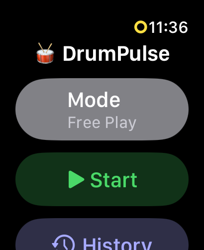
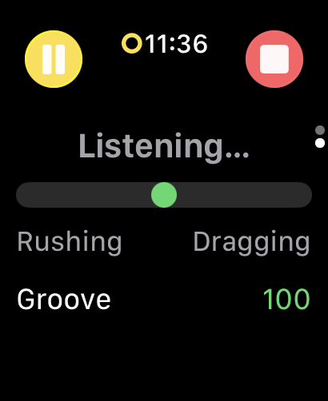
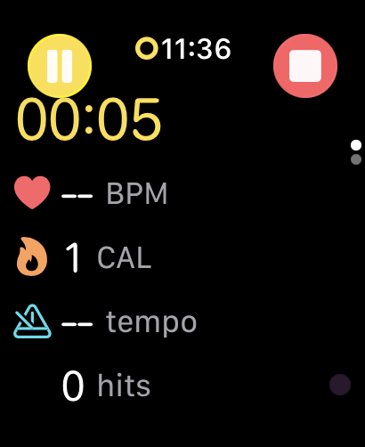
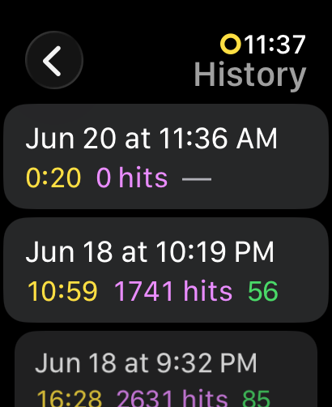
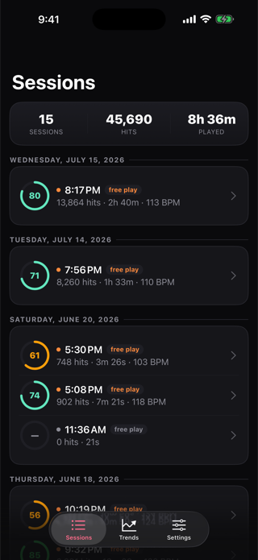
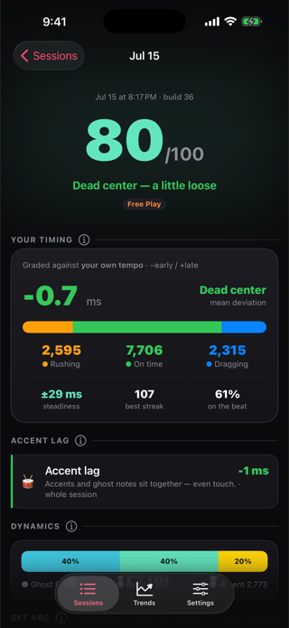
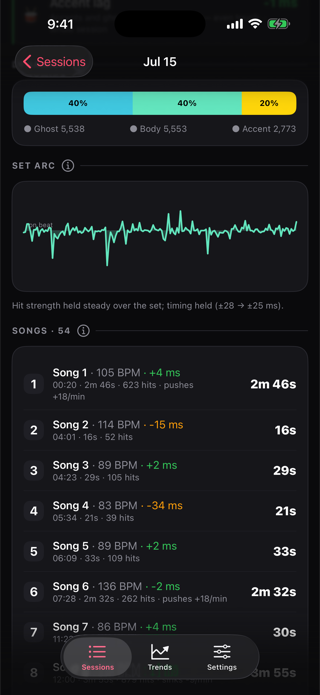
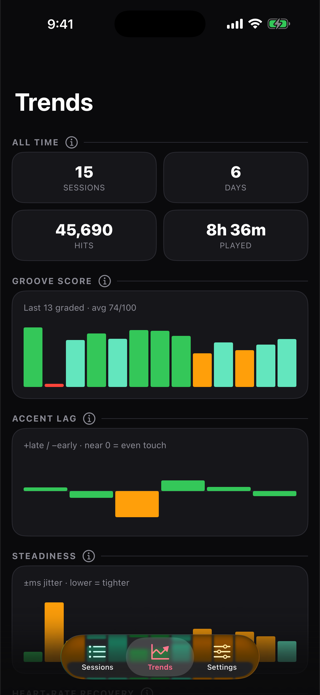

Turn your drumming into a workout — and your Apple Watch into a timing coach.
Track every practice session as a Health workout, see your heart rate and calories burned, and get real-time feedback on whether you're rushing or dragging — all from your wrist.
On your wrist
DrumPulse lives on your Apple Watch — it feels every strike, shows your tempo and groove in real time, and keeps your history right there.




On your phone
The iPhone companion pulls every session off the watch so you can dig into the detail and watch yourself improve over time.




What it does
DrumPulse listens to the motion of your snare hand, turns each strike into data, and gives you both a real workout and a coach for your time.
Each session writes to the Health app with duration, heart rate, and active energy — so your drumming counts toward your activity rings.
A groove meter swings orange when you're ahead of the beat, blue when you're behind, with an "in the pocket" score for the whole set.
Your heart rate on your wrist while you play, plus calories estimated from a drumming MET value and your body weight.
Your current tempo, derived in real time from the timing between your hits.
Every hit is split into ghost / body / accent relative to your own playing, so the recap shows the light-and-shade in your set.
In Free Play a long set is split into songs on the natural pauses, so each song gets its own tempo, timing, and dynamics rollup.
"Hit the pad 8 times" and DrumPulse sets detection sensitivity from your real strikes — no guess-and-check.
Your recent sessions are kept on the watch and synced to the iPhone companion, where the bigger screen shows trends across sets.
Two ways to measure time
| Mode | Reference | Use it for |
|---|---|---|
| Metronome | A fixed click you set the tempo for | Objective practice — each hit is graded ahead/behind a steady grid, like a timing trainer. |
| Free Play | Your own recent groove | Open playing — it learns your established tempo and flags when you speed up or slow down relative to yourself, no click needed. |
Good to know
Hit detection is hand-agnostic — it reads the force of each strike, so it works on either wrist. But the watch only sees the hand it's on, so that hand decides which voice you're measuring. Wear it on your snare (backbeat) hand to grade your backbeats; wear it on your lead hand to track your hi-hat/ostinato stream.
Privacy
No accounts, no tracking, no analytics, no servers. Heart-rate, motion, and session data are used on-device to coach your timing and saved locally — synced only between your own watch and iPhone over Apple's encrypted connection.